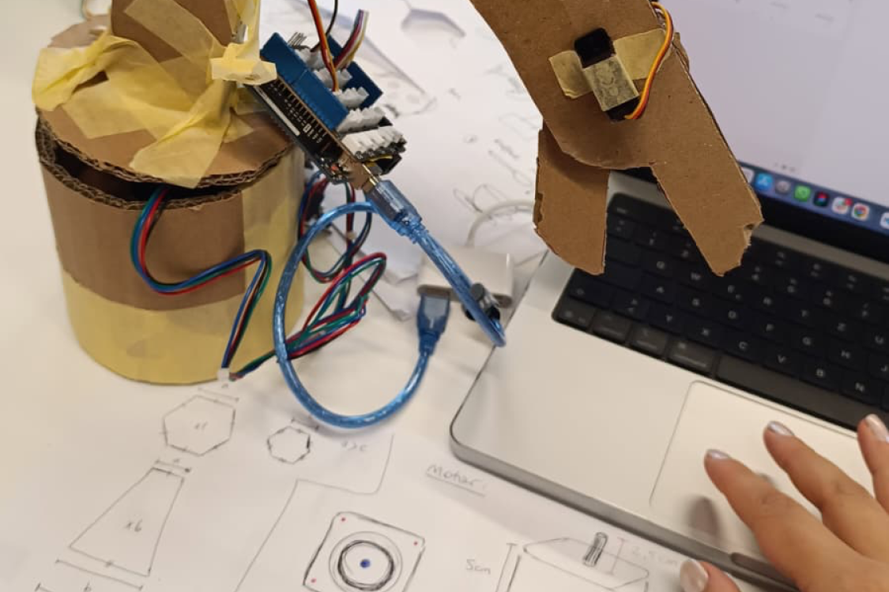
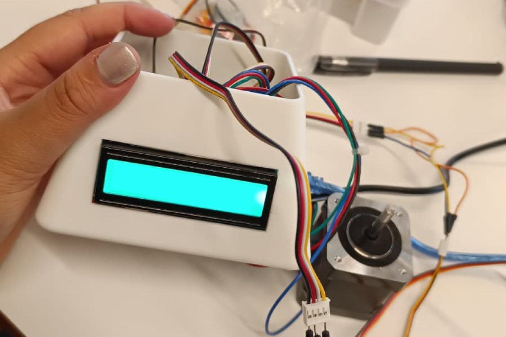

Tea-Rex: Innovative Design
Tea-Rex ist ein innovatives Produktdesign-Konzept für eine interaktive Tee-Zubereitung. Das Projekt verbindet Nutzerzentriertheit mit spielerischer Form – von ersten Skizzen über funktionale Prototypen bis zur finalen Produktsprache. Im Fokus stand ein Erlebnis, das Alltagsrituale neu denkt.

Konzept und Ideenfindung
Durch Brainstorming, Moodboards und Designprinzipien-Workshops entstand die Idee des Tea-Rex: Ein Teekocher, dessen Form an einen kleinen Dinosaurier erinnert und gleichzeitig klare funktionale Hinweise gibt – Temperatur wird durch Farbe kommuniziert, Aufgusszeit durch eine sanfte Melodie signalisiert.

Prototyp und Testing
Ein physischer Prototyp wurde mit 3D-Druck und Arduino realisiert. Nutzertests zeigten, dass die spielerische Gestaltung die Aufmerksamkeit für den Teevorgang erhöht und die Nutzerinnen und Nutzer bewusster mit Temperatur und Ziehzeit umgehen.